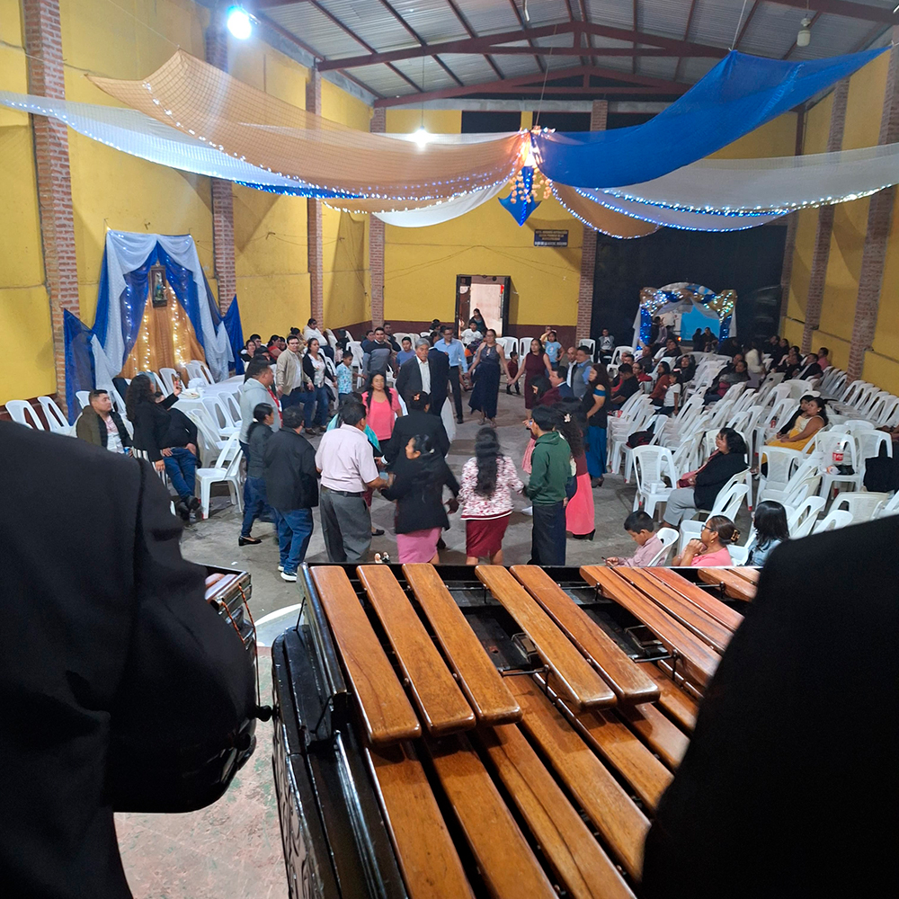
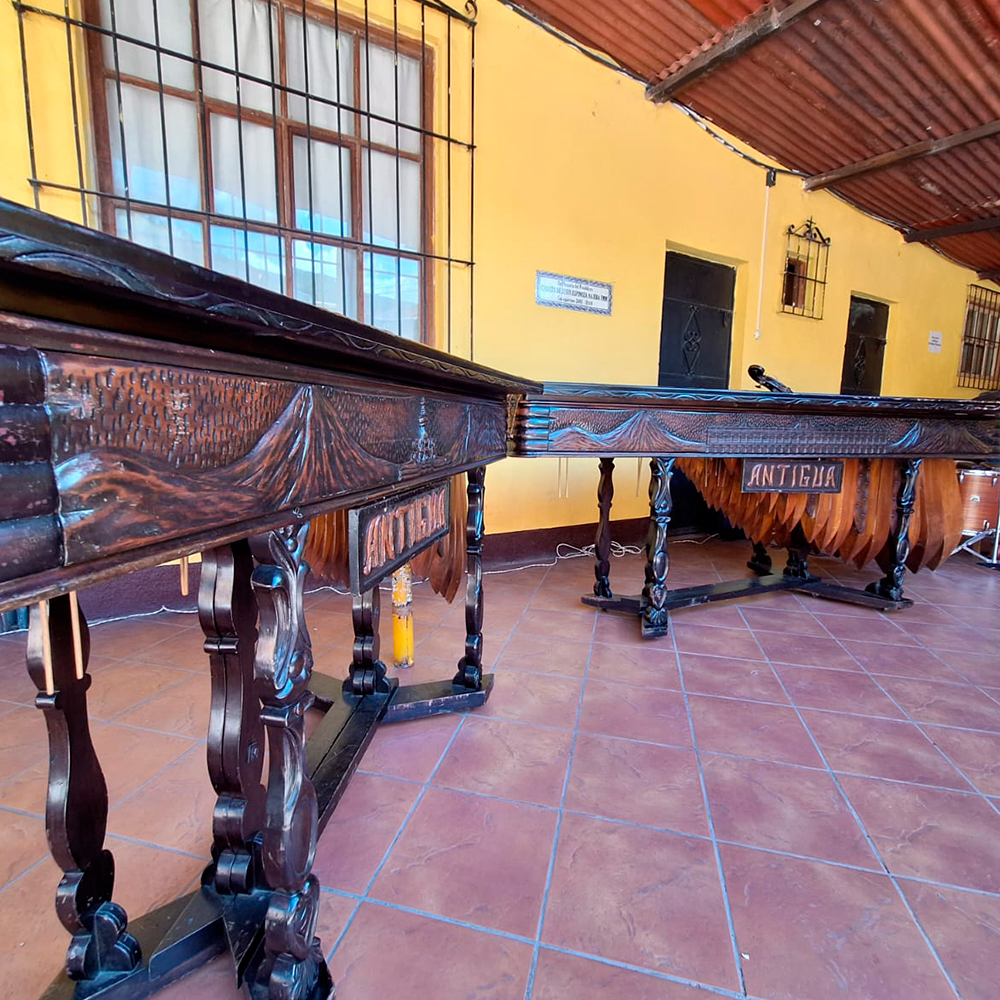

Marimba Chapina es una empresa guatemalteca dedicada a promover y difundir la música de marimba a nivel mundial. La marimba es el instrumento nacional de Guatemala y un símbolo de nuestra identidad cultural.
Nuestro objetivo es llevar los acordes de la marimba a escenarios internacionales, preservando la tradición y fusionándola con nuevas corrientes musicales para que el mundo entero pueda disfrutarla.
Contamos con músicos profesionales, eventos culturales, grabaciones y programas educativos para niños y jóvenes que quieran aprender a tocar este hermoso instrumento.

